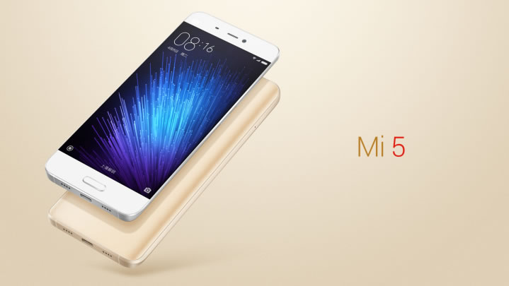

About Xiaomi
Click Here
Click Here to see our cheap smartphones
Xiaomi was founded in 2010 by serial entrepreneur Lei Jun, who believes that high-quality
technology doesn't need to cost a fortune. We create remarkable hardware, software, and internet
services for and with the help of our Mi fans. We incorporate their feedback into our product range,
which currently includes the Mi Note Pro, Mi Note, Mi 4, Redmi 2, Mi TV, Mi Band and other accesso-
ries.With more than 61 million handsets sold in 2014, and products launched in Taiwan, Hong Kong,
Singapore, Malaysia, Philippines, India, Indonesia and Brazil, Xiaomi is
expanding its footprint across the world to become a global brand.
Xioami mi5 is the newest Xiaomi smartphone, it's really cheap and has a great value.
"Just for fans" – that's our belief. Our hardcore Mi fans lead every step of the way. In fact, many
Xiaomi employees were first Mi fans before joining the team. As a team, we share the same relentless
pursuit ofperfection, constantly refining and enhancing our products to create the best user experience
possible. We are also fearless in testing new ideas and pushing our own boundaries. Our dedication
and belief in innovation, together with the support of Mi fans, are the driving forces behind our
unique Mi products.
Xiaomi is focused on being the most user-centric mobile internet company, and we aim
to constantly exceed expectations through innovations in software, hardware and services.
Many of our employees were initially fans of Mi products, before they decided to join us. Our team is
not only passionate about technology, but also relentlessly pursues perfection to break tradition and
push boundaries, all just to ensure that our products remain unique and offer an unparalleled user
experience. Xiaomi is headquartered in Beijing, China and has offices
in Asia-Pacific, India, and Brazil.

About Xiaomi Smartphones
Xiaomi was founded in 2010 by serial entrepreneur Lei Jun, who believes that high-quality
technology doesn't need to cost a fortune. We create remarkable hardware, software, and internet
services for and with the help of our Mi fans. We incorporate their feedback into our product range,
which currently includes the Mi Note Pro, Mi Note, Mi 4, Redmi 2, Mi TV, Mi Band and other accesso-
ries.With more than 61 million handsets sold in 2014, and products launched in Taiwan, Hong Kong,
Singapore, Malaysia, Philippines, India, Indonesia and Brazil, Xiaomi is
expanding its footprint across the world to become a global brand.
"Just for fans" – that's our belief. Our hardcore Mi fans lead every step of the way. In fact, many
Xiaomi employees were first Mi fans before joining the team. As a team, we share the same relentless
pursuit ofperfection, constantly refining and enhancing our products to create the best user experience
possible. We are also fearless in testing new ideas and pushing our own boundaries. Our dedication
and belief in innovation, together with the support of Mi fans, are the driving forces behind our
unique Mi products.
Xiaomi is focused on being the most user-centric mobile internet company, and we aim
to constantly exceed expectations through innovations in software, hardware and services.
Many of our employees were initially fans of Mi products, before they decided to join us. Our team is
not only passionate about technology, but also relentlessly pursues perfection to break tradition and
push boundaries, all just to ensure that our products remain unique and offer an unparalleled user
experience. Xiaomi is headquartered in Beijing, China and has offices
in Asia-Pacific, India, and Brazil.